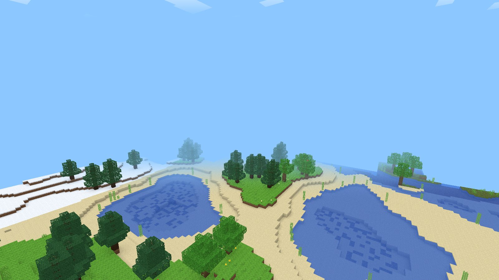
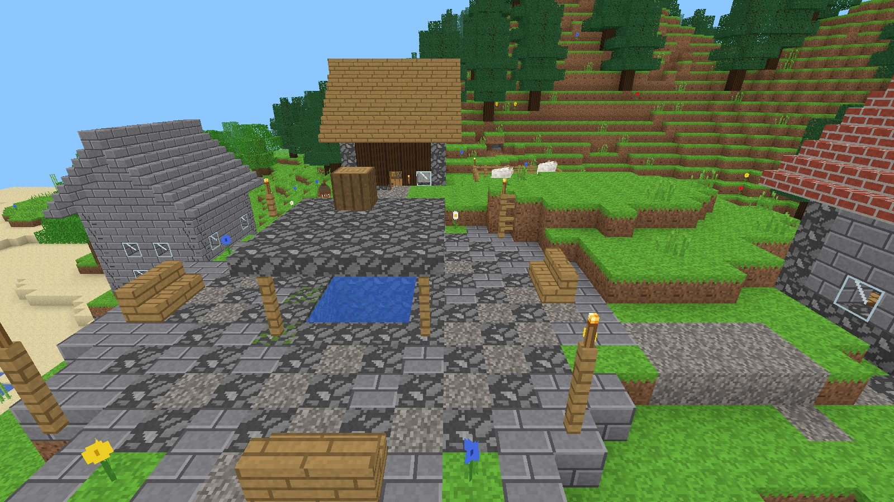
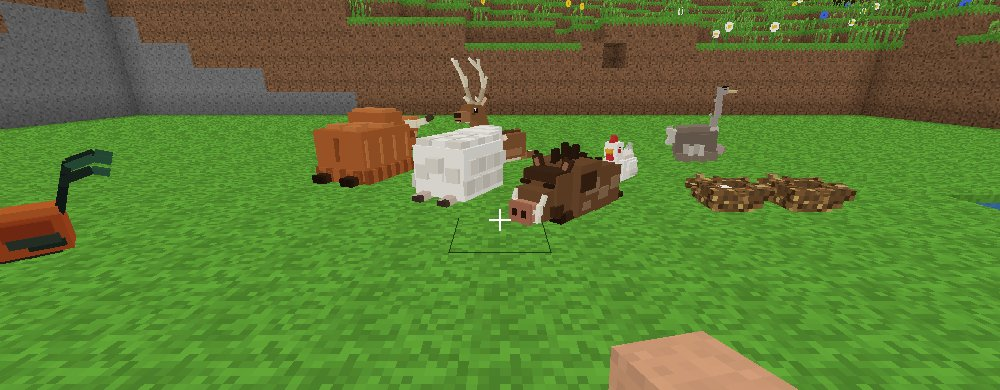
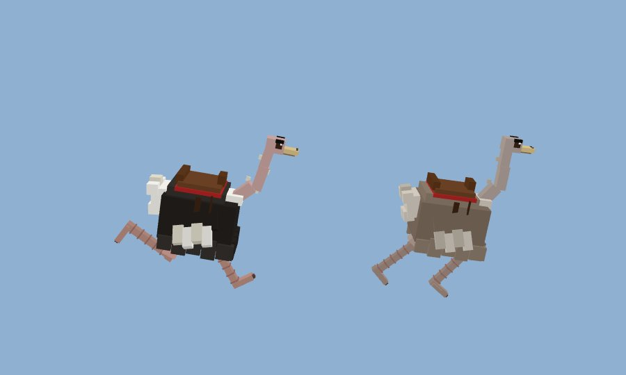
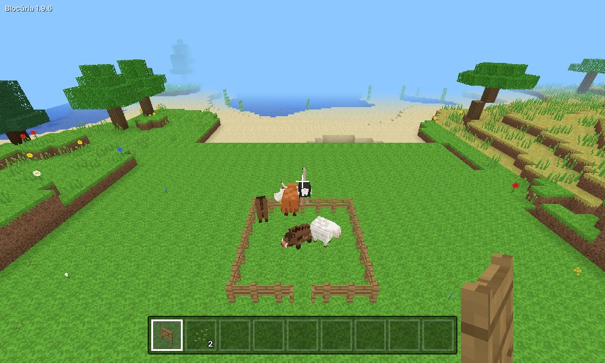
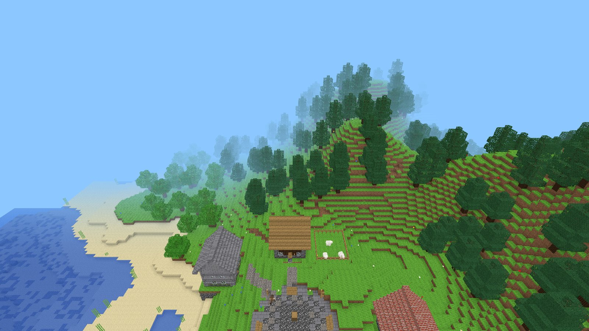
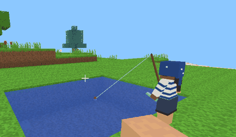

Explora sem fim
Florestas, praias, pântanos, desertos, montanhas com neve e grutas cheias de minério. Cada semente gera um mundo diferente.
Um mundo inteiro feito de blocos. Explora montanhas e grutas, constrói a tua casa, faz negócio nas aldeias e aguenta-te quando cai a noite.
Na Blocúria, o mundo não fica à espera. Os aldeões trabalham, os animais dormem e fogem da chuva, e as criaturas da noite andam à tua procura.

Florestas, praias, pântanos, desertos, montanhas com neve e grutas cheias de minério. Cada semente gera um mundo diferente.

Agricultores, pastores, pescadores, ferreiros, mineiros e sábios, cada um com a sua casa e a sua mesa de trabalho. Faz negócio em safiras e desbloqueia trocas melhores.

Javalis, ovelhas, veados, galinhas e avestruzes. Dormem de noite, abrigam-se da chuva e ficam no mundo como o terreno.

Doma um lobo que te segue, se senta e luta ao teu lado, ou põe uma sela numa avestruz e atravessa o mapa a correr.

Centenas de blocos e objetos: casas, quintas, cercas com portões, barcos, fornalhas, baús e muito mais. Modo de sobrevivência ou criativo.

Multijogador na mesma rede: um abre o mundo e os outros entram. Também dá através de redes virtuais como o Radmin VPN.

Cada coisa foi pensada para dar gosto de ver.
Tudo o que vês aqui foi capturado dentro do jogo. Clica numa imagem para a veres em grande.
O jogo recebe atualizações com frequência. Quando há uma versão nova, o próprio jogo avisa-te e atualiza-se com um clique.
A carregar as novidades…
Já jogaste a Blocúria? Diz-nos o que achaste. Cada avaliação e cada sugestão é lida, e muitas das novidades do jogo nascem de ideias de quem joga.
Não precisas de criar conta. Demora menos de um minuto.
A Blocúria é grátis. Descarrega o instalador, instala e joga. Depois disso, o jogo mantém-se sempre atualizado sozinho.
O instalador traz a versão 1.11.0. Se já houver uma mais recente, o jogo atualiza-se na primeira vez que o abrires.
| Sistema | Windows 10 ou 11, 64 bits |
| Processador | Qualquer processador dos últimos 10 anos |
| Memória | 4 GB de RAM |
| Placa gráfica | Qualquer uma com suporte de WebGL 2 (incluindo as integradas) |
| Espaço | Cerca de 300 MB |
| Internet | Só para atualizações (o jogo funciona sem internet) |
Se o jogo estiver lento, baixa a distância de visão em Opções.